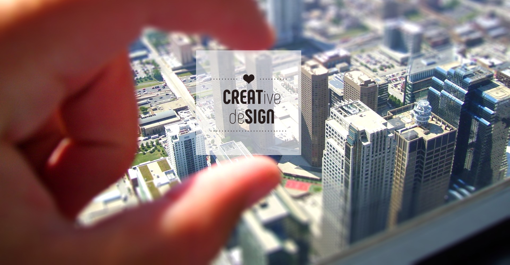

This is what happen when creative and code coming together

Hello, welcome to my portfolio, my name is Nirit and I enjoy creating accessible,
human-centered products.I have gained hands-on experience in various skills as Frontend Engineer and
as a Web Designer.I'm a curious creature and a relentless problem solver. more than 90% of what I
know, I have learned by myself, it is very easy for me to pick up new skills and adapt to changes
and new processes.In my work, my biggest achievements is when I’m able to witness a product, that I
have been part of its creation, reaching, both, the business goals and the users needs.
I love what I do and I keep learning every day:).
In my enjoyable quest of discovery, learn, and growth, I keep collecting more and more Skills, here are some of them:
Providing creative solutions from conceptualization and development to the final implementation while maintaining up-to-date knowledge of current design trends, techniques, and technologies.
After doing user research, competitive and complementary business analysis, wireframes and prototypes, Here are some examples of the final results.
I found all of the steps of Branding creation very interesting: conducting market research, creating brand identity and implementing the new brand in all of the business units, communication channels and media.
Integral part that can make all the difference in creating print assets, is taking in consideration the user experience of the physical nature of the final product.
From Web Components and UI/UX engineering to React, Redux and Typescript. Check out my Frontend Development self projects:
Don't hesitate to Keep in touch: